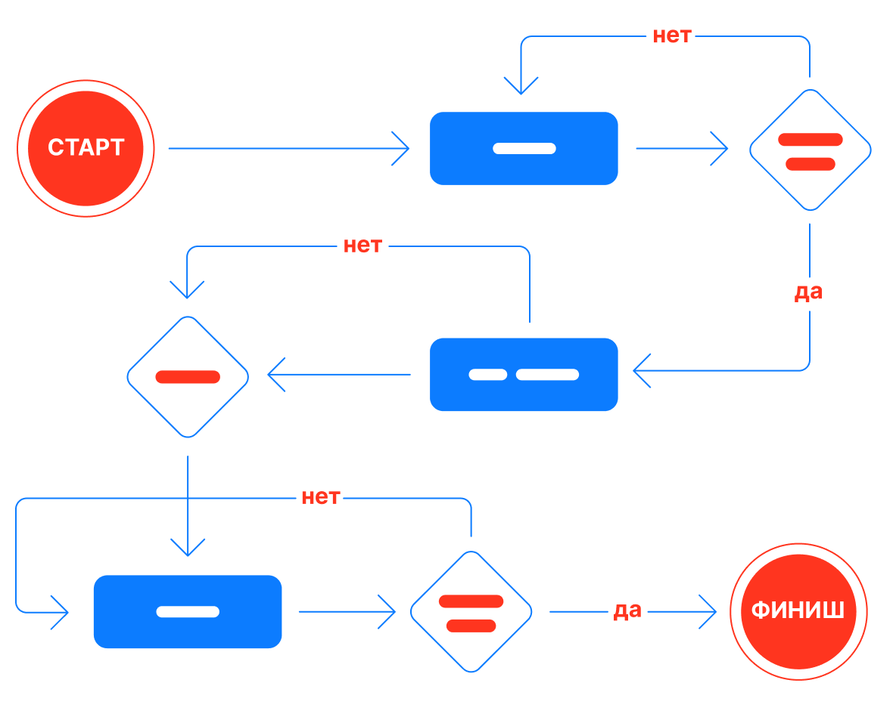
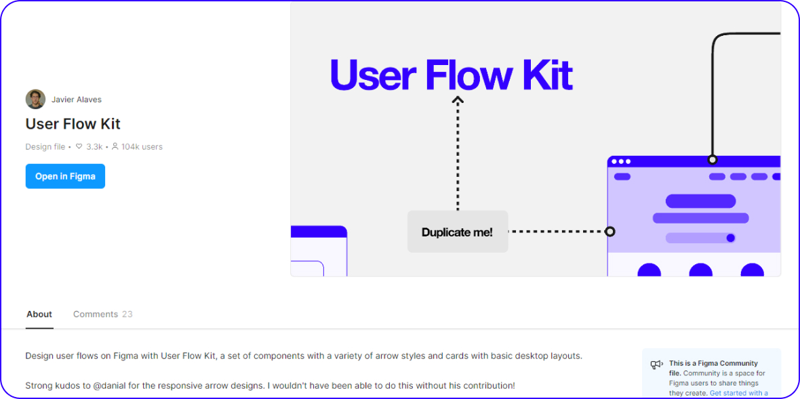
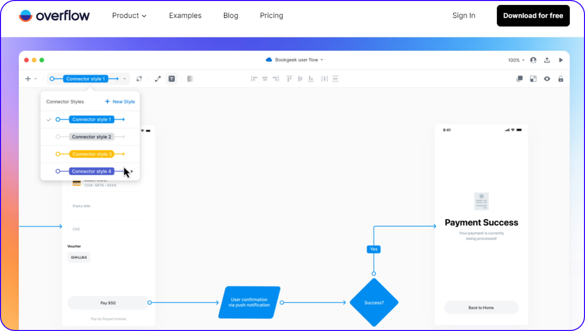
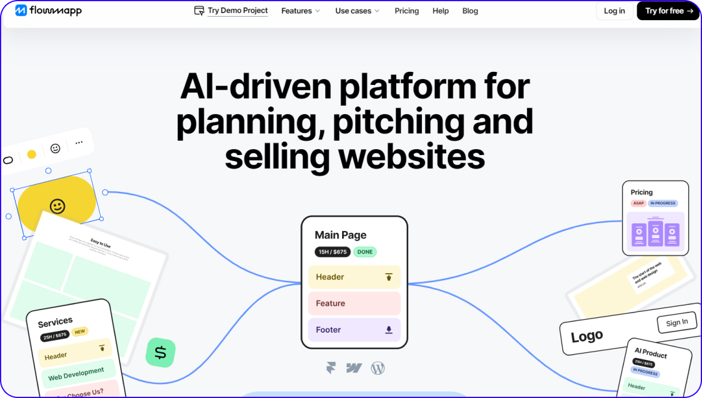
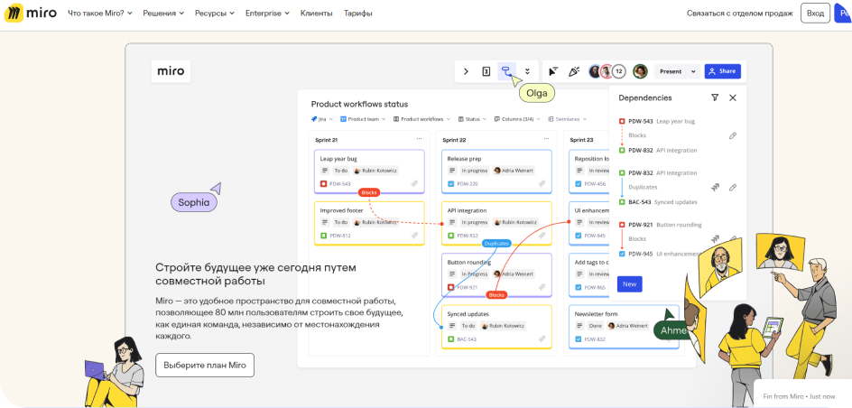

UX/UI дизайн
User Flow
User Flow — схема, которая показывает, как пользователь перемещается от одного шага к другому, чтобы выполнить ту или иную задачу.

Пример User Flow
User flow позволяет:
1. Понять логику взаимодействия пользователя с продуктом
Пример: User flow процесса поиска и бронирования авиабилетов на сайте авиакомпании. Он показывает, как пользователь переходит от поиска рейсов к выбору и оплате билетов.
2. Выявить проблемные участки и точки "отпадения" пользователей
Пример: User flow процесса поиска и бронирования авиабилетов на сайте авиакомпании. Он показывает, как пользователь переходит от поиска рейсов к выбору и оплате билетов.
3. Оптимизировать пользовательский опыт, сделав его более удобным и интуитивно понятным
Пример: User flow процесса оформления заказа в интернет-магазине. Он позволяет упростить и ускорить этот процесс, сделав его более интуитивным для пользователей.
4. Спланировать дизайн и архитектуру продукта
Пример: User flow процесса использования личного кабинета на банковском сайте. Он помогает спланировать структуру и интерфейс кабинета, чтобы пользователям было просто находить необходимые функции.
5. Наглядно продемонстрировать процесс использования продукта
Пример: User flow процесса бронирования номера в отеле на сайте. Он может быть использован для наглядной презентации разработчикам, дизайнерам и менеджерам, чтобы они лучше понимали, как пользователи взаимодействуют с продуктом.
Виды User flow
1. User Flow
Это базовый и наиболее распространенный тип user flow, который представляет собой визуальную схему последовательности действий пользователя. Такой user flow помогает понять логику взаимодействия пользователя с продуктом, выявить проблемные места и оптимизировать пользовательский опыт.
Пример:
- Пользователь открывает приложение
- Выбирает тип кухни или ресторан
- Просматривает меню и добавляет блюда в корзину
- Вводит адрес доставки
- Выбирает способ оплаты
- Оформляет и подтверждает заказ
- Отслеживает статус заказа
2. User Scenario Flow
Этот вид user flow фокусируется на конкретных ситуациях и сценариях использования продукта, которые важны для пользователей. Такой user flow позволяет детально проработать и визуализировать каждый шаг взаимодействия пользователя с продуктом в рамках определенного сценария.
Пример:
- Сценарий: "Пользователь ищет ресторан для быстрого обеда"
- Открывает приложение
- Фильтрует рестораны по времени доставки
- Выбирает ресторан с оптимальным временем доставки
- Быстро просматривает меню и делает заказ
- Оплачивает заказ и ждет курьера
3. User Story Flow
User story flow строится на основе пользовательских историй, которые описывают потребности и мотивации пользователей. Этот вид user flow помогает лучше понять и учесть требования пользователей в процессе разработки продукта.
Пример:
- История пользователя: "Как занятой профессионал, я хочу быстро заказывать еду на обед, чтобы сэкономить время"
- Открывает приложение
- Находит ближайшие рестораны с быстрой доставкой
- Выбирает любимое блюдо из предпочитаемых ресторанов
- Оплачивает заказ одним касанием
- Получает уведомление о доставке
4. Business Process Flow
Business process flow фокусируется на внутренних бизнес-процессах организации, которые связаны с обслуживанием пользователей. Такой user flow помогает оптимизировать workflows и взаимодействие между различными отделами и системами.
Пример:
- Процесс обработки заказа в ресторане:
- Поступление заказа в систему ресторана
- Подтверждение наличия блюд
- Приготовление заказа
- Передача курьеру для доставки
- Оплата заказа
Как создать User Flow
В user flow используются различные фигуры для визуального представления последовательности действий пользователя.
Обозначения элементов блок-схем
Круг или овал — начало и конец сценария.
Прямоугольник — действие, которое нужно выполнить пользователю для продвижения вперед по сценарию.
Стрелка — направление движения пользователя по сценарию. Они могут указывать любое направление, пересекаться и даже отправлять назад.
Ромб — решение или выбор, который должен сделать пользователь, если у него есть несколько опций.
Параллелограмм — ввод или вывод новой информации.
Пошаговая инструкция
1. Выясни у заказчика: цели продукта; какие функции и возможности должен содержать интерфейс; а также какие действия ожидаются от пользователей.
Пример:
Цели продукта:
- Увеличение продаж и конверсии пользователей в клиентов
- Создание удобного и интуитивно понятного интерфейса для поиска, выбора и оформления заказа
Функции и возможности интерфейса:
- Каталог товаров с фильтрами и сортировкой
- Возможность добавления товаров в корзину
- Оформление заказа с выбором способа доставки и оплаты
- Личный кабинет пользователя для просмотра истории заказов
- Возможность оставить отзыв о товарах и обратной связи
Действия, ожидаемые от пользователей:
- Поиск и выбор необходимых товаров
- Добавление выбранных товаров в корзину
- Оформление заказа с указанием контактных данных и адреса доставки
- Оплата заказа выбранным способом
- Просмотр статуса заказа в личном кабинете
- Оставление отзывов о товарах и сервисе
2. Подробно опиши твоего пользователя. Для этого можно создать персону (типичный портрет) пользователя.
Пример:
Персона: Ольга, 32 года, офисный работник
Демографические характеристики:
- Возраст: 32 года
- Пол: Женский
- Семейное положение: Замужем, 1 ребенок (7 лет)
- Образование: Высшее, экономическое
- Род занятий: Офисный сотрудник в страховой компании
Поведенческие характеристики:
- Образ жизни: Активная, следит за модными трендами, любит шопинг
- Цели и мотивы: Хочет выглядеть стильно и современно, при этом экономить время и деньги
- Предпочтения: Ценит удобство, качество и разумные цены
- Привычки: Регулярно совершает онлайн-покупки, прежде всего у проверенных брендов
- Уровень технической грамотности: Уверенный пользователь интернета и мобильных приложений
Проблемы и боли:
- Не всегда находит подходящие вещи в магазинах или тратит много времени на поиск
- Беспокоится о качестве товаров при покупке онлайн
- Хочет быстро и удобно оформлять заказы, не тратя много времени
3. Подумай о сценарии (ситуации), в котором пользователь может использовать ваш продукт.
Сценарий: "Ольга ищет новые повседневные наряды для работы"
Описание сценария:
Ольга работает в офисе, и ей регулярно нужно обновлять свой гардероб для деловых и полуформальных образов. Она любит следить за модными тенденциями, но часто не хватает времени на поиски подходящих вещей в обычных магазинах.
Ход действий:
1. Ольга открывает приложение интернет-магазина на своем смартфоне
2. Она переходит в раздел "Женская одежда" и применяет фильтры, чтобы найти блузки, юбки и брюки для офисного гардероба
3. Просматривает описания и фотографии понравившихся моделей, обращая внимание на размеры, материалы и отзывы других покупателей
4. Ольга добавляет несколько вещей в корзину, чтобы сравнить их между собой
5. Она переходит в корзину, где проверяет итоговую стоимость заказа и выбирает подходящий способ доставки
6. Ольга вводит свои контактные данные и адрес доставки, а также выбирает предпочитаемый способ оплаты (картой онлайн)
7. Она подтверждает заказ и получает уведомление о его статусе
8. Через несколько дней Ольга получает посылку с заказанными вещами, примеряет их и оставляет положительные отзывы в приложении
4. Схематично опиши последовательность действий пользователя от точки А до точки Б
1. Точка А: Пользователь (Ольга) открывает мобильное приложение интернет-магазина
2. Ольга переходит в раздел "Женская одежда"
3. Она применяет фильтры по типу одежды (блузки, юбки, брюки), размеру, цвету и другим параметрам
4. Ольга просматривает каталог и выбирает понравившиеся модели, добавляя их в корзину
5. Пользователь переходит в корзину, где может просмотреть выбранные товары, их количество и стоимость
6. Ольга нажимает кнопку "Оформить заказ"
7. Она заполняет форму с личными данными (имя, адрес доставки, контактная информация)
8. Пользователь выбирает способ оплаты (картой онлайн)
9. Ольга подтверждает заказ
10. Точка Б: Пользователь получает уведомление о статусе заказа
Дополнительные действия:
- Пользователь может оставить отзыв о товарах и сервисе в личном кабинете
- Ольга может вернуться к просмотру каталога и повторить процесс покупки
5. Выясни, какие узкие (проблемные) места есть в твоей схеме. Сразу предложи пользователю решение.
Проблемные места:
1. Процесс применения фильтров и поиска товаров:
- Проблема: Пользователь может столкнуться с тем, что фильтры и поиск не удобны или не дают точных результатов
- Решение: Обеспечить интуитивно понятный интерфейс фильтрации, с возможностью быстрого применения и просмотра результатов. Также реализовать умный поиск с автодополнением и расширенными возможностями
2. Добавление товаров в корзину:
- Проблема: Пользователь может случайно удалить товар из корзины или не понять, как изменить количество
- Решение: Сделать процесс управления корзиной максимально простым и понятным. Добавить возможность быстрого редактирования количества товаров, а также визуальные подсказки при удалении
3. Оформление заказа:
- Проблема: Пользователь может усомниться в безопасности ввода личных данных или не понять, какие поля обязательны для заполнения
- Решение: Обеспечить четкую и понятную форму оформления заказа, с подсказками и индикацией обязательных полей. Также необходимо обеспечить надежную защиту персональных данных пользователя
4. Отсутствие обратной связи:
- Проблема: Пользователь может не знать, как проверить статус заказа или оставить отзыв о товарах
- Решение: Добавить уведомления о статусе заказа, а также интегрировать простой механизм оставления отзывов в личном кабинете
6. Оформите полученный User Flow с помощью одной из программ
Программы для создания User Flow

Скриншот шаблона UX Flow
Для работы с блок-схемами в Figma есть различные варианты, например, встроенный Fig Jam или шаблон UX Flow.
Overflow

Скриншот шаблона Overflow
Преимущество данного инструмента заключается в том, что готовые блок-схемы можно интегрировать с такими популярными инструментами, как Figma или Sketch.
Flowmapp

Скриншот шаблона Flowmapp
В нем также можно создавать User Flow, но часть функций платная.
Miro

Скриншот шаблона Miro
Этот ресурс был создан специально для создания майнд мэпов (mindmap), поэтому в нем удобно отображать любые схемы. Кроме того, в нем есть уже готовые шаблоны для User Flow.
Примеры заданий для практики
Создание User Flow
Выбери приложение (например, онлайн-магазин, банковское приложение или сервис для бронирования квартир) и создай user flow для одной из основных задач (например, покупки товара, открытия счета или бронирования жилья).
Тестирование User Flow
Создай прототип на основе твоего user flow и проведи тестирование с несколькими пользователями. Запиши их отзывы и поведение во время использования.
Изучение Конкурентов
Выбери 3 конкурирующих продукта в одной нише и проанализируй их user flow. Определи сильные и слабые стороны каждого.